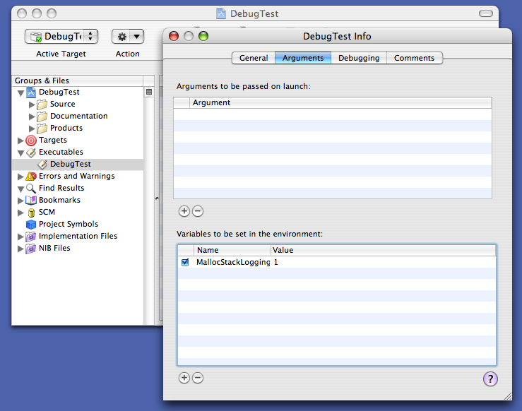
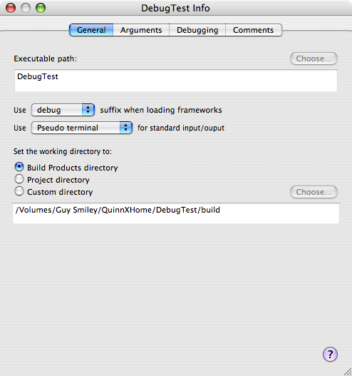
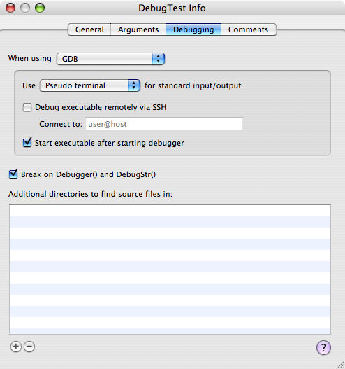
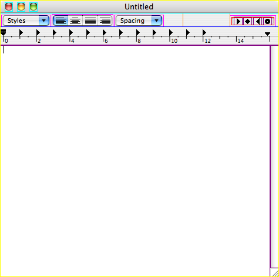
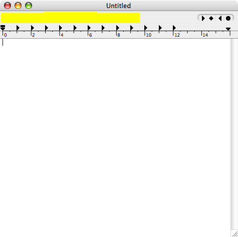

|
IntroductionMac OS X includes a number of debugging facilities added by engineering teams to help develop and debug specific subsystems. Many of these facilities remain in the released system and you can use them to debug your code. This technote describes some of the more broadly useful ones. In cases where a debugging facility is documented in another place, there's a short overview of the facility and a link to the existing documentation. This is not an exhaustive list: not all debugging facilities are, or will be, documented. WARNING: The debugging facilities described in this technote are unsupported. We reserve the right to change or eliminate each facility as dictated by the evolution of Mac OS X; this has happened in the past, and we fully expect it to happen again in the future. These facilities are for debugging only: you must not ship a product that relies on the existence or functionality of the facilities described in this technote. IMPORTANT: This technote is based on Mac OS X 10.4 (with Xcode 2.0 installed) and it is accurate for such a system. Many of the details covered in this technote vary from release to release; you may encounter minor variations on older or newer systems. Note: The previous version of this technote was based on Mac OS X 10.3.5 (with Xcode 1.5 installed). In the process of updating the document, I've retested all of debugging facilities described therein. Most of the facilities did not change significantly; in that case, I've left the description unmodified. This means that some of the examples shown are actually from 10.3.5, and may show slightly different results than they would on 10.4. However, the overall thrust of the example is still accurate. If the debugging facility did change significantly in 10.4, I've updated the description to reflect the 10.4 behavior and mentioned the 10.3.x behavior in passing. This technote covers advanced debugging techniques. If you're just getting started with Mac OS X development, you should consult the following material.
BasicsThe later sections of this technote describe the debug facilities of Mac OS X in detail. Many these facilities use similar techniques to enable and disable the facility, and to see its output. This section describes these common techniques. Enabling Debugging FacilitiesSome debugging facilities are enabled by default. However, most facilities must be enabled using one of the following. Environment VariablesIn many cases you can enable a debugging facility by setting a particular environment variable. The easiest way to do this is to launch your application from Terminal, and specify the environment variable on the command line. Listing 1 shows how to set an environment variable in the Listing 1: Setting an environment variable in an sh-compatible shell $ MallocStackLogging=1 /Applications/TextEdit.app/Contents/MacOS/TextEdit malloc[1002]: recording stacks using standard recorder […] Listing 2: Setting an environment variable in a csh-compatible shell % setenv MallocStackLogging 1 % /Applications/TextEdit.app/Contents/MacOS/TextEdit malloc[1004]: recording stacks using standard recorder […] Note: The default shell in Mac OS X 10.3 and later is IMPORTANT: If you're using a Alternatively, open two Terminal windows and use the first exclusively for debugging and the second for all other commands. In addition, you can set environment variables in GDB, as shown in Listing 3. Listing 3: Setting an environment variable in GDB $ gdb /Applications/TextEdit.app GNU gdb 5.3-20030128 (Apple version gdb-330.1) […] (gdb) set env MallocStackLogging 1 (gdb) r Starting program: /Applications/TextEdit.app/Contents/MacOS/TextEdit malloc[1062]: recording stacks using standard recorder […] If you're using Xcode to build and debug your application, you can set environment variables using the executable inspector. Figure 1 shows an example of this. Figure 1: Setting environment variables in Xcode  Finally, Mac OS X provides a mechanism for setting environment variables for all processes launched by a specific user. See Technical Q&A QA1067, 'Setting environment variables for user processes' for details. PreferencesYou can enable other debugging facilities by setting a preference using the Listing 4: Setting a preference using defaults $ defaults write com.apple.TextEdit NSTraceEvents YES $ /Applications/TextEdit.app/Contents/MacOS/TextEdit 2004-08-30 16:47:55.851 TextEdit[1135] timeout = 62998416724.149353 seco… 2004-08-30 16:47:55.894 TextEdit[1135] got apple event of class 61657674… […] Once you're finished debugging, you should delete the preference, also using Listing 5: Deleting a preference using defaults $ defaults delete com.apple.TextEdit NSTraceEvents For more information about Cocoa applications also let you set temporary preferences on the command line. For example, Listing 6 shows how to achieve equivalent results to Listing 4 without modifying any permanent preferences. Listing 6: Temporarily setting a preference $ /Applications/TextEdit.app/Contents/MacOS/TextEdit -NSTraceEvents YES 2004-10-25 17:28:41.143 TextEdit[5774] timeout = 62993575878.857864 seco… 2004-10-25 17:28:41.179 TextEdit[5774] got apple event of class 61657674… […] FilesCertain debugging facilities are enabled by the existence of specific files within the file system. Listing 7 shows an example of this: creating the file Listing 7: Create a specific file to enable debugging $ sudo touch /var/log/do_dnserver_log [… now restart …] $ cat /var/log/dnserver.log ------------------------------------------------- […] create_client "KernelEventAgent" BFF7FA80 (1203) […] received_message_from "KernelEventAgent" register "DISCONNECT" […] […] For more information about this specific example, see CFNotificationCenter. Callable RoutinesMany system frameworks include routines that print debugging information to Listing 8: Calling a debugging routine from GDB
(gdb) call (void) GDBComponentList()
Cnt tRef# (address) Type/SubT/Manu Flags EntryPnt File Parnt ThingName
0 10008 0180d540 adec/.mp3/appl 10000000 00000000 -3 00000 (Not loade…
[…]
2 1012c 005c3be0 clok/micr/appl 10000003 8b1586a8 1 00000 (Not loade…
Inst:0x850003; Err=0; Storage:0x1fe6f0
Inst:0x890004; Err=0; Storage:0x1fe6f8
0 10065 0180fd08 clok/soun/appl 00000005 00000000 -3 00000 (Not loade…
[…]
There are 9 component manager files:
0: refs 2, path [/System/Library/Components/VCH263Codec.component]…
1: refs 94, path [/System/Library/QuickTime/QuickTimeComponents.co…
2: refs 5, path [/System/Library/Components/IOQTComponents.compone…
3: refs 2, path [/System/Library/QuickTime/QuickTimeVR.component],…
4: refs 7, path [/System/Library/QuickTime/QuickTimeFirewireDV.com…
5: refs 1, path [/System/Library/QuickTime/QuickTimeMPEG4.componen…
6: refs 1, path [/System/Library/Components/PDFImporter.component]…
7: refs 1, path [/System/Library/QuickTime/ApplePixletVideo.compon…
8: refs 1, path [/System/Library/QuickTime/QuickTimeStreaming.comp…
If you don't see the output from the routine, you may need to look at the console log, as described in the next section. IMPORTANT: If you use this technique for your own code, be warned that it doesn't always work for routines that are declared In practice, this only affects Intel code. Seeing Debug OutputPrograms that generate debug output generally do so using one of three different mechanisms.
Printing to The other two mechanism are much simpler. You can view the system log using the Console application (in The kernel trace facility is a highly specialized low-latency, high-availability logging mechanism. In most cases a program that logs to the kernel trace facility also includes a way to view the logs (for example, you can using kdump to print a trace file generated using ktrace). Console OutputMany programs, and indeed many system frameworks, print debugging messages to
Attaching to a running program (using the Architecture ConsiderationsThe examples shown in this technote are from a PowerPC-based Macintosh computer. However, they work just fine on an Intel-based machine. The only significant difference relates to parameter passing. The PowerPC architecture passes parameters in registers, while the Intel architecture passes parameters on the stack. On PowerPC, a good rule of thumb is that the first parameter is in GPR3 (General Purpose Register 3), the second parameter is in GPR4, and so on. The GDB syntax for these is On Intel, there are two rules of thumb.
In both Intel cases, any function result is in register EAX ( If the routine is a C++ member function, there is an implicit first parameter for Listing 9 and Listing 10 show these rules of thumb in action. Listing 9: Parameters on PowerPC $ gdb /Applications/TextEdit.app GNU gdb 6.1-20040303 (Apple version gdb-434) […] (gdb) fb CFStringCreateWithFormat Function "CFStringCreateWithFormat" not defined. Breakpoint 1 (CFStringCreateWithFormat) pending. (gdb) r Starting program: /Applications/TextEdit.app/Contents/MacOS/TextEdit Reading symbols for shared libraries […] done Breakpoint 1 at 0x90741e80 Pending breakpoint 1 - "CFStringCreateWithFormat" resolved Breakpoint 1, 0x90741e80 in CFStringCreateWithFormat () (gdb) # first param is "alloc" (gdb) p/a $r3 $1 = 0x0 (gdb) # second param is "formatOptions" (gdb) p/a $r4 $2 = 0x0 (gdb) # third param is "format" (gdb) p/a $r5 $3 = 0xa0742454 <kCFURLLocalhost+340> (gdb) call (void) CFShow($r5) %@%c (gdb) finish Run till exit from #0 0x90741e80 in CFStringCreateWithFormat () 0x9073eaf8 in CFURLCreateWithFileSystemPathRelativeToBase () (gdb) # function result (gdb) p/a $r3 $4 = 0x306a40 (gdb) call (void) CFShow($r3) /Applications/TextEdit.app/Contents/MacOS/ Listing 10: Parameters on Intel $ gdb /Applications/TextEdit.app GNU gdb 6.1-20040303 (Apple version gdb-425) […] (gdb) fb CFStringCreateWithFormat Function "CFStringCreateWithFormat" not defined. Breakpoint 1 (CFStringCreateWithFormat) pending. (gdb) r Starting program: /Applications/TextEdit.app/Contents/MacOS/TextEdit Reading symbols for shared libraries […] done Breakpoint 1 at 0x9078f111 Pending breakpoint 1 - "CFStringCreateWithFormat" resolved Breakpoint 1, 0x9078f111 in CFStringCreateWithFormat () (gdb) # first param is "alloc" (gdb) p/a *(int *)($ebp+8) $1 = 0x0 (gdb) # second param is "formatOptions" (gdb) p/a *(int *)($ebp+12) $2 = 0x0 (gdb) # third param is "format" (gdb) p/a *(int *)($ebp+16) $3 = 0xa078bd88 <dyld_func_lookup_pointer+16100> (gdb) call (void) CFShow($3) %@%c (gdb) finish Run till exit from #0 0x9078f111 in CFStringCreateWithFormat () 0x9078b6c1 in CFURLCreateWithFileSystemPathRelativeToBase () (gdb) # function result (gdb) p/a $eax $4 = 0x306ce0 (gdb) call (void) CFShow($eax) /Applications/TextEdit.app/Contents/MacOS/ (gdb) # Now clear the breakpoint and reset it on (gdb) # the first instruction of CFStringCreateWithFormat. (gdb) delete 1 (gdb) # Note the "*" syntax in the following command, which sets the (gdb) # breakpoint at the first instruction of the routine. (gdb) b *CFStringCreateWithFormat Breakpoint 2 at 0x9078f10b (gdb) c Continuing. Breakpoint 2, 0x9078f10b in CFStringCreateWithFormat () (gdb) # Now we're stopped at the first instruction of CFStringCreateWithFormat. (gdb) # The stack frame hasn't been created yet. (gdb) # Print each parameter, this time relative to the stack pointer. (gdb) p/a *(int *)($esp+4) $5 = 0x0 (gdb) p/a *(int *)($esp+8) $7 = 0x0 (gdb) p/a *(int *)($esp+12) $8 = 0xa078bd88 <dyld_func_lookup_pointer+16100> (gdb) call (void) CFShow($8) %@%c IMPORTANT: These are only rules of thumb. If the routine has any non-standard parameters, or a non-standard function result, these rules of thumb do no apply, and you should consult the documentation for the details. In this context, standard parameters are integers (that fit in a single register), enumerations, and pointers (including pointers to arrays and pointers to functions). Non-standard parameters are floating point numbers, vectors, structures, and integers bigger than a register. For a detailed description of calling conventions for all Mac OS X architectures, see Mac OS X ABI Function Call Guide. Finally, if you're looking for information about specific instructions, be aware that the Help menu in Shark (included in the Xcode developer tools) has both a PowerPC and Intel instruction reference. CrashReporterCrashReporter is an invaluable debugging facility that logs information about all programs that crash. It is described in detail in Technical Note TN2123, 'CrashReporter'. CrashReporter is enabled all the time; all you have to do is look at its output. BSDThe BSD subsystem implements process, memory, file, and network infrastructure, and thus is critical to all applications on Mac OS X. BSD implements a number of neat debugging facilities that you can take advantage of. Core DumpsCore dumps have an undeserved reputation as a primitive debugging facility. In reality they can be very helpful when debugging difficult problems, especially when you can't reproduce the problem locally. You can enable core dumps on a system-wide basis by adding the line Note: Prior to Mac OS X 10.4, you would enable core dumps on a system-wide basis by changing the line "COREDUMPS=-NO-" in Alternatively, if you run your program from Terminal, you can simply raise the core dump size limit in the shell beforehand. Listing 11 shows an example of this. Listing 11: Unlimited core dump size $ ulimit -c unlimited $ /Applications/TextEdit.app/Contents/MacOS/TextEdit […] To test the core dump facility, send your program a Listing 12: Testing core dumps by sending a SIGABRT $ ps | grep TextEdit 374 p1 S+ 0:00.58 /Applications/TextEdit.app/Contents/MacOS/TextEdit 379 std S+ 0:00.01 grep TextEdit $ kill -ABRT 374 Your application will then quit with a "Abort trap (core dumped)" message. You can find the core dump in Listing 13: Using core dumps
Abort trap (core dumped)
$ ls -lh /cores
total 296856
-r-------- 1 quinn admin 144M 29 Oct 10:23 core.374
$ otool -c /cores/core.374
/cores/core.374:
Argument strings on the stack at: 0xc0000000
/Applications/TextEdit.app/Contents/MacOS/TextEdit
/Applications/TextEdit.app/Contents/MacOS/TextEdit
TERM_PROGRAM=Apple_Terminal
TERM=xterm-color
SHELL=/bin/bash
TERM_PROGRAM_VERSION=100
USER=quinn
__CF_USER_TEXT_ENCODING=0x1F5:0:15
PATH=/bin:/sbin:/usr/bin:/usr/sbin
PWD=/Users/quinn
SHLVL=1
HOME=/Users/quinn
LOGNAME=quinn
SECURITYSESSIONID=20f550
_=/Applications/TextEdit.app/Contents/MacOS/TextEdit
$ gdb -c /cores/core.374
GNU gdb 5.3-20030128 (Apple version gdb-292) (Sat Sep 20 03:22:27 GMT 2003)
Copyright 2003 Free Software Foundation, Inc.
GDB is free software, covered by the GNU General Public License, and you are
welcome to change it and/or distribute copies of it under certain conditions.
Type "show copying" to see the conditions.
There is absolutely no warranty for GDB. Type "show warranty" for details.
This GDB was configured as "powerpc-apple-darwin".
Core was generated by `/Applications/TextEdit.app/Contents/MacOS/TextEdit'.
#0 0x900075c8 in ?? ()
(gdb) bt
#0 0x900075c8 in ?? ()
#1 0x90007118 in ?? ()
#2 0x901960bc in ?? ()
#3 0x927d5ecc in ?? ()
#4 0x927dc640 in ?? ()
#5 0x927fe6d0 in ?? ()
#6 0x92dd2a80 in ?? ()
#7 0x92de93fc in ?? ()
#8 0x92dfd730 in ?? ()
#9 0x92eb9a1c in ?? ()
#10 0x00007d98 in ?? ()
#11 0x00007c0c in ?? ()
As you can see from Listing 13, core dumps do not contain debugger symbols. If you have a symbol file handy, you can tell GDB to consult it using the Listing 14: Adding symbols (gdb) add-symbol-file /System/Library/Frameworks/AppKit.framework/AppKit […] (gdb) add-symbol-file /System/Library/Frameworks/CoreFoundation.framework\ /CoreFoundation […] (gdb) add-symbol-file /System/Library/Frameworks/System.framework/System […] #12 0x00007c0c in ?? () (gdb) add-symbol-file /System/Library/Frameworks/Carbon.framework/\ Frameworks/HIToolbox.framework/HIToolbox […] (gdb) bt #0 0x900075c8 in mach_msg_trap () #1 0x90007118 in mach_msg () #2 0x90191930 in __CFRunLoopRun () #3 0x901960bc in CFRunLoopRunSpecific () #4 0x927d5ecc in RunCurrentEventLoopInMode () #5 0x927dc640 in ReceiveNextEventCommon () #6 0x927fe6d0 in BlockUntilNextEventMatchingListInMode () #7 0x92dd2a80 in _DPSNextEvent () #8 0x92de93fc in -[NSApplication nextEventMatchingMask:untilDate:inMode:… #9 0x92dfd730 in -[NSApplication run] () #10 0x92eb9a1c in NSApplicationMain () #11 0x00007d98 in ?? () #12 0x00007c0c in ?? () IMPORTANT: Core dumps are large. In the example Listing 13, TextEdit's core dump is 144 MB. If you have core dumps enabled as a matter of course, make sure that you regularly clean out Memory AllocatorThe default memory allocator includes a number of debugging facilities that you can enable via environment variables. These are fully documented in the manual page. Table 1 lists some of the more useful ones. Table 1: Some useful memory allocator environment variables
IMPORTANT: These environment variables do not require a special memory library (like MallocDebug or the Guarded Memory Allocator). In fact, they are supported by the default, non-debug memory allocator, and are, therefore, always available. The default memory allocator also logs messages if it detects certain common programming problems. For example, if you free a block of memory twice, or free memory that you never allocated, Listing 15: A common message printed by free *** malloc[4691]: Deallocation of a pointer not malloced: 0x1000; \ This could be a double free(), or free() called with the middle of \ an allocated block; Try setting environment variable MallocHelp to \ see tools to help debug You can debug this sort of problem by running your program within GDB and putting a breakpoint on MallocDebug and ObjectAllocMac OS X includes two GUI applications for memory allocation debugging, MallocDebug and ObjectAlloc. For more information about these tools, see the Memory Performance document. Guarded Memory AllocatorMac OS X includes a guarded memory allocator, Listing 16: Enabling libgmalloc $ gdb /Applications/TextEdit.app GNU gdb 6.1-20040303 (Apple version gdb-434) […] (gdb) set env DYLD_INSERT_LIBRARIES /usr/lib/libgmalloc.dylib (gdb) r Starting program: /Applications/TextEdit.app/Contents/MacOS/TextEdit Allocations will be placed on word (4 byte) boundaries. - Small buffer overruns may not be noticed. - Applications using AltiVec instructions may fail. GuardMalloc-11 Reading symbols for shared libraries […] You can learn more about Note: In Mac OS X 10.3.x, For information about how using Standard C++ LibraryThe standard C++ library supports a number of debugging features.
Command Line ToolsMac OS X includes a number of cool command line tools for debugging. I've listed my favorite tools in Table 2. Table 2: Command line tool highlights
Dynamic Linker (dyld)The Mac OS X dynamic linker (dyld) supports a number of debugging facilities that you can enable via environment variables. These are fully documented in the manual page. Table 3 lists some of the more useful variables. Table 3: Dynamic linker environment variables
Of these, If you're loading code dynamically and the code fails to load, you can use the dynamic linker routine Additionally, if you're loading code using dlopen, you can similar information using dlerror. Debug LibrariesMany Mac OS X frameworks include both a production and a debug variant. The debug variant has the suffix "_debug". For example, the Core Foundation framework's production variant is Listing 17: Using _debug libraries $ DYLD_IMAGE_SUFFIX=_debug /Applications/TextEdit.app/Contents/MacOS/TextEdit 2004-08-30 18:32:06.051 TextEdit[1393] CFLog (0): Assertions enabled […] If Terminal doesn't float your boat, you can do the same using the executable inspector in Xcode. In Figure 2, you can see that the "Use … suffix when loading frameworks" popup has been set to "debug". Figure 2: Enabling debug libraries in Xcode  The exact behavior of the debug library varies from framework to framework. Most debug libraries include:
I strongly recommend that you use the debug libraries as part of your day-to-day debugging process. Note: Unless otherwise stated, the debugging facilities in this technote do not require you to use the debug libraries. Enabling Just One Debug LibraryIn some circumstances you might want to enable just one debug library. For example, let's say you're debugging an Apple event problem, so you want to enabled the "_debug" variant of the AE framework. However, when you set Fortunately there's a simple, albeit somewhat unsubtle, answer: just copy the debug variant over the non-debug variant. Listing 18 shows an example of this. Listing 18: Activating just the AE debug library $ cd /System/Library/Frameworks/ApplicationServices.framework/\ Frameworks/AE.framework/Versions/A/ $ sudo cp -n AE AE_original Password: ******** $ sudo cp AE_debug AE Once you've done this, you should restart to activate your change. IMPORTANT: This technique is useful for debugging but it has a number of negative effects. For example, the debug library is prebound at a different address from the non-debug library, so prebound programs won't be able to launch prebound, and thus will launch slower. Therefore, I recommend that you do this only on a dedicated test computer or, if that's not practical, on your main computer while booted from a test system. Moreover, you should revert to the original library as soon as you've finished debugging. To revert back to the non-debug library, you can just copy the original library back, as shown in Listing 19. Listing 19: Deactivating the AE debug library $ sudo cp AE_original AE Password: ******** Note: The reason why I recommend copying the libraries rather than renaming them is that it makes it harder to accidentally overwrite your last copy of a library. Debug Library VersioningThe debug libraries are installed by the Xcode installer, not by the system installer. The debug libraries are not updated when you update your system software. This makes it very common for your debug libraries to be out of sync with your production libraries (typically the debug libraries are older). This can cause some unexpected incompatibilities. For example, if you install Mac OS X 10.4, then install Xcode 2.0, then update your system to Mac OS X 10.4.3, you'll find that you can no longer launch an application with the debug libraries enabled. This is because, in Mac OS X 10.4.3, Apple added a new routine to the CoreServices framework, and updated the DesktopServicesPriv framework to use that routine. However, one of these frameworks (CoreServices) has a debug variant and the other (DesktopServicesPriv) does not. Thus, if you enable debug libraries, you get the debug variant of CoreServices (installed by Xcode 2.0, and thus equivalent to version 10.4) and the production variant of DesktopServicesPriv (software updated to version 10.4.3), and this combination fails to load. This problem has always existed on Mac OS X, and Apple is considering how to resolve it (r. 4379270). In the meantime, the most reliable way to use the debug libraries is to set up a dedicated debug partition. On this partition you should first clean install the desired major OS release, and then install the developer tools associated with that release. For example, clean install Mac OS X 10.4, and then install Xcode 2.0. Then disable software updates for that partition. This ensures that your production and debug libraries start out in sync, and stay in synch. Profile LibrariesMany libraries also support a profiling variant which has the suffix "_profile". The profile libraries have many of the same limitations as the debug libraries. Escaping the Window ServerUnder some circumstances it can be helpful to operate without the window server. For example, if you need to modify the parameters to
When you're done working at this level, just exit from your shell (using the IMPORTANT: This environment is not single user mode. Most system daemons are still running; only the GUI components of the system are shut down. DaemonsMost system daemons include some sort of debugging facility. In many cases a daemon's debugging features are described in its man page. This section describes some of the particularly interesting ones. launchdlaunchd is the first process run by the kernel (Mac OS X 10.4 and later); it is responsible for launching all other processes on the system. launchctlYou can modify the state of Table 4: Useful launchctl commands
Note: The ability to control You can make a temporary change by running IMPORTANT: To affect the state of the global instance of You can make a persistent change by adding the command to /etc/launchd.conf. launchd Logging
Listing 20: Logging launchd actions to a file $ sudo cp /etc/syslog.conf /etc/syslog.conf-orig Password: ******** $ ( cat /etc/syslog.conf-orig ; echo "launchd.* /var/log/launchd.log" ) | \ sudo cp /dev/stdin /etc/syslog.conf $ sudo kill -HUP `cat /var/run/syslog.pid` The Listing 21: Getting more launchd logging $ sudo launchctl log level debug Password: ******** Debugging a Particular JobFinally, Table 5: Properties useful for debugging
lookupdIf you're experiencing problems with
Listing 22 shows an example of this. Once you've done these steps, you can look in Listing 22: Enabling lookupd debugging $ sudo dscl . create /dsRecTypeStandard:Config/lookupd Debug YES Password: ******** $ sudo dscl . create /dsRecTypeStandard:Config/lookupd Trace YES $ sudo cp /etc/syslog.conf /etc/syslog.conf-orig $ sed 's/netinfo.err/netinfo.debug/' /etc/syslog.conf-orig | \ sudo cp /dev/stdin /etc/syslog.conf $ sudo kill -HUP `cat /var/run/syslog.pid` $ sudo kill -HUP `cat /var/run/lookupd.pid` Listing 23 shows how to undo these changes. Listing 23: Disabling lookupd debugging $ sudo dscl . delete /dsRecTypeStandard:Config/lookupd $ sudo mv /etc/syslog.conf-orig /etc/syslog.conf $ sudo kill -HUP `cat /var/run/syslog.pid` $ sudo kill -HUP `cat /var/run/lookupd.pid` For more information about Printing (CUPS)Mac OS X 10.2 and later uses CUPS (Common UNIX Printing System) as its core printing architecture. CUPS has a built-in debug logging feature, controlled by the CUPS configuration file ( IMPORTANT: After changing this file you must send a Listing 24: Restarting the CUPS daemon sudo /System/Library/StartupItems/PrintingServices/PrintingServices restart If you're writing a CUPS driver or filter, you can add entries to this log by printing them to Listing 25: Logging to CUPS // Debug message fprintf(stderr, "DEBUG: page_width = %.0f\n", page_width); // Warning message fprintf(stderr, "WARNING: Printer not responding\n"); // Error message fprintf(stderr, "ERROR: Lost connection with printer\n"); Core ServicesCore Services includes a number of routines (for example, Figure 3: Setting USERBREAK in Xcode  Code Fragment Manager (CFM)The CFM compatibility environment on Mac OS X supports two helpful environment variables, Core FoundationAll variants of the Core Foundation (CF) framework support the Listing 26: Calling CFShow from GDB
$ gdb /Applications/TextEdit.app
GNU gdb 5.3-20030128 (Apple version gdb-330.1) […]
(gdb) fb CFRunLoopAddSource
No symbol table is loaded. Use the "file" command.
Breakpoint 1 at 0x0
(gdb) r
[…]
Breakpoint 1, 0x901b5764 in CFRunLoopAddSource ()
(gdb) call (void) CFShow($r3)
<CFRunLoop 0x116290 [0xa01900e0]>{
locked = false,
wait port = 0xf03,
stopped = false,
current mode = (none),
common modes = <CFSet 0x1162c0 [0xa01900e0]>{
count = 1,
capacity = 4,
values = (
1 : <CFString 0xa0195b38 [0xa01900e0]>{
contents = "kCFRunLoopDefaultMode"
}
)
},
common mode items = (null),
modes = <CFSet 0x116310 [0xa01900e0]>{
count = 1,
capacity = 17,
values = (
20 : <CFRunLoopMode 0x1163a0 [0xa01900e0]>{
name = kCFRunLoopDefaultMode,
locked = false,
port set = 0x1003,
sources = (null),
observers == (null),
timers = (null)
},
)
}
}
IMPORTANT: If you don't see any output from Note: In Listing 26 I've reformatted the output from There are a number of other CF routines that you might find useful to call from GDB, including The Core Foundation framework also has a debug variant that offers extensive debugging assistance. For example, the non-debug variant of Core Foundation does not check the validity of parameters that you pass to its routines, whereas the debug variant includes full parameter checking. This can help you track down numerous Core Foundation-related bugs in your code. The Core Foundation debug library supports an environment variable called Table 6: Bit definitions for CFZombieLevel environment variable
WARNING: CFNotificationCenterYou can enable CFNotificationCenter logging by creating the file You can see an example of this in Files. Note: On Mac OS X 10.3.x, the corresponding files were Also, Mac OS X 10.3.x supported client-side logging. If you create the file Component ManagerComponent Manager exports a routine, In addition, if you set the Finally, if a component fails to load, you can use dynamic linker facilities to debug the problem. See Dynamic Linker (dyld) for details. File ManagerCore Services File Manager (commonly known as the Carbon File Manager, or just File Manager) is nicely integrated with the If you set the If you set the File Manager has a number of useful GDB-callable routines. The most useful, Listing 27: PrintVolumeInfo in action
(gdb) call (void) PrintVolumeInfo(1)
1:vol=-100 "X2"
2:vol=-101 "X1"
3:vol=-102 "Guy Smiley"
4:vol=-130 "UFS Victim"
5:vol=-105 "Network"
6:returned error -35
(gdb) call (void) PrintVolumeInfo(0)
Volume Information:
"X2" mountpoint: "/"
vRef=-100 volID=-100 diskID=disk0s10
"X1" mountpoint: "/Volumes/X1"
vRef=-101 volID=-101 diskID=disk0s9
"Guy Smiley" mountpoint: "/Volumes/Guy Smiley"
vRef=-102 volID=-102 diskID=disk0s11
"UFS Victim" mountpoint: "/Volumes/UFS Victim"
vRef=-130 volID=-130 diskID=disk3s2
"Network" mountpoint: "/Network"
vRef=-105 volID=-105 diskID=/Network
There are two other GDB-callable routines that are primarily of interest to folks developing VFS plug-ins on Mac OS X. They allow you to print the directory enumeration cache and the file ID tree, both of which are compatibility structures maintained by the File Manager for non-volfs volumes (see Technical Q&A QA1113, 'The "/.vol" directory and "volfs"' for information about volfs).
The file ID tree is maintained centrally by Listing 28: Print the file ID tree
$ sudo gdb
Password:********
GNU gdb 6.1-20040303 (Apple version gdb-425) […]
(gdb) call (int) close(2)
$1 = 0
(gdb) shell tty
/dev/ttyp2
(gdb) call (int) open("/dev/ttyp2", 2)
$2 = 2
(gdb) call (void *) FileIDTreeStorageServerDump("fsnode_all")
$3 = (void *) 0x316320
(gdb) call (void) CFShow($3)
Shared universes:
501(3): mod seed = 2
Shared segments ([domainID][segmentID](<unused entries>):<address>
[0][0](32/480):0x200e00
[1][0](496/16):0x300e00
[2][0](504/8):0x504b00
Entries scheduled for removal:
69000000(108)@1: FSObjectVolumeEntry: vRefNum: -105
0(5): mod seed = 2
Shared segments ([domainID][segmentID](<unused entries>):<address>
[0][0](32/480):0x400c00
[1][0](496/16):0x500c00
[2][0](504/8):0x300800
Entries scheduled for removal:
69000000(108)@1: FSObjectVolumeEntry: vRefNum: -105
checked-in processes:
204(0/0x7000040): seed 2(0), idle
211(0/0x6000040): seed 2(0), idle
248(501/0x7000040): seed 2(0), idle
114(501/0x6000040): seed 1(0), idle
120(501/0x5000040): seed 2(0), idle
183(0/0x5000040): seed 1(0), idle
No transactions in progress
Note: In Mac OS X 10.3.x, the file ID tree was maintained independently by each process. On that system, you can just call Folder ManagerThe Folder Manager supports a single environment variable, GestaltCore Services exports a three routines— Listing 29: Using the Gestalt debug routines
(gdb) call (void) DebugDumpGestalt()
DebugDumpGestalt
'a/ux': 0x2a65c6ac (proc)
'addr': 0x00000007
[…]
(gdb) call (void) DebugGestalt(0x766d2020)
'vm ': 0x00000011
(gdb) call (void) DebugGestaltStr("vm ")
'vm ': 0x00000011
ThreadingThe Core Services threading APIs (MP threads and Thread Manager) support an environment variable, Web ServicesWeb Services supports two helpful environment variables, Disks and DiscsDisk ArbitrationIf you append a "-d" to the Disc RecordingIf you set the IMPORTANT: Due to a bug (r. 4413303), this facility does not work on Mac OS X 10.4.x. Disk UtilityIf you set the ApplicationServicesApple EventsThe Apple Event Manager has extensive built-in debugging support. The best way to learn about this support is use GDB to call the Listing 30: Apple Event Manager debugging help
(gdb) call (void) GDBPrintHelpDebuggingAppleEvents()
The AppleEvent Manager has been completely rewritten for this
version of Mac OS X. The internal structure of an AEDesc is
now a pointer to a sparse tree. If you're having problems
it could be because you're accessing the dataHandle of an
AEDesc directly.
Also of note is that AEGetDescData and AEGetDescDataSize only
work with value descriptors created by AECreateDesc - you cannot
get the data size of an AERecord or AEList, for example.
To print the contents of an AppleEvent from GDB, you can:
(gdb) call (void) GDBPrintAEDesc(descPtr)
To view all currently installed AppleEvent coercion handlers:
(gdb) call (void) GDBPrintAECoercionTables()
To view all contents install AppleEvent handlers:
(gdb) call (void) GDBPrintAEHandlerTables()
Additionally, to log information about AppleEvent manager calls,
you can set environment variables that will produce debugging output
to the console:
% setenv AEDebug 1 # general debug output
% setenv AEDebugSends 1 # print sent events
% setenv AEDebugReceives 1 # print received events and replies
% setenv AEDebugVerbose 1 # print result information on (most) \
calls (very verbose)
% setenv AEDebugOSL 1 # print result information from OSL
% setenv AEDebugFile /tmp/logfile # send debug output to this file
Note: In the above text, "this version of Mac OS X" refers to Mac OS X 10.2. Some environment variables—specifically If you are using the debug library, you can also control Apple event debugging by creating three files in
IMPORTANT: The last two items only affect the destination of the debugging output. In order to produce debugging output, you have to enable it using one of the environment variables listed above, or by creating If you set the Remote Apple EventsIf you're having problems with remote Apple events, you may find it useful to enable logging for the Apple event server process. To do this, edit Listing 31: Enabling remote Apple event debugging <?xml version="1.0" encoding="UTF-8"?>
<!DOCTYPE plist PUBLIC "-//Apple Computer//DTD PLIST 1.0//EN" \
"http://www.apple.com/DTDs/PropertyList-1.0.dtd">
<plist version="1.0">
<dict>
<key>Disabled</key>
<true/>
<key>Label</key>
<string>com.apple.AEServer</string>
<key>ProgramArguments</key>
<array>
<string>/System/Library/Frameworks/ApplicationServices.\
framework/Frameworks/AE.framework/Versions/A/Support/AEServer</string>
<string>--debug</string>
</array>
<key>inetdCompatibility</key>
<dict>
<key>Wait</key>
<false/>
</dict>
<key>Sockets</key>
<dict>
<key>Listeners</key>
<dict>
<key>SockServiceName</key>
<string>eppc</string>
<key>SockType</key>
<string>stream</string>
<key>Bonjour</key>
<true/>
</dict>
</dict>
</dict>
</plist>
You must stop and start the Remote Apple Events service for this change to take effect; you can do this in the Sharing panel of System Preferences. The logging information will appear in the system log. IMPORTANT: Because Note: On Mac OS X 10.3.x the Apple event server was run by xinetd. The configuration file was Process ManagerThere are circumstances where you want to debug a process, but you don't want to launch it from within GDB. For example, if you've ssh'd into a remote computer in order to debug a GUI application, you shouldn't launch it directly from GDB because the application will be in the wrong Mach bootstrap namespace, and thus can't connect to critical services like the pasteboard server. Normally this isn't a problem: you simply ask the remote user to launch the application for you and then attach to the running application using GDB's Process Manager offers a nice solution to this problem. If you set the Listing 32: System log message generated by paused process Sep 7 14:18:37 guy-smiley QuickTime Player: Blocking on INIT_Processes \ for 15 seconds; attach to pid 4344 if you want. Core GraphicsQuartz Debug has a number of useful debugging features; see Technical Q&A QA1236, 'Debugging Graphics with QuartzDebug' for more details. QuickDrawQuickDraw exports a number of routines that you can call from GDB to get information about QuickDraw state. The first three routines— Listing 33: QuickDraw printing routines
(gdb) set $window = (void *) FrontWindow()
(gdb) set $port = (void *) GetWindowPort($window)
(gdb) call (int) QDDebugPrintPortInfo($port)
Dumping port 0x435670...
PixMap: 0x1FE72C
Base Address: 0xB0028000 [onscreen, buffered]
RowBytes: 0xFFFF9400
Bounds: (0, 0, 106, 352) (352w x 106h)
Depth: 0020
Port bounds: (0, 0, 106, 352) (352w x 106h)
Port shape: 0x1FE798 (0, 0, 106, 352) (352w x 106h) …
Vis rgn: 0x1FE730 (0, 0, 106, 352) (352w x 106h) …
Clip rgn: 0x1FE738 (-32000, -32000, 32000, 32000) …
Fore Color: 0000 0000 0000
Back Color: FFFF FFFF FFFF
[…]
$21 = 0
(gdb) call (int) QDDebugPrintCGSInfo($port)
CGS info for port 0x435670
CGSWindowID: 19798
Shape: 0x59E734 (99, 785, 205, 1137) (352w x …
Vis Region: 0x59E72C (0, 0, 0, 0) (0w x 0h) [rect]
Dirty Region: 0x59E730 (0, 0, 0, 0) (0w x 0h) [rect]
$20 = 0
(gdb) # 0x1FE730 is "Vis rgn" from QDDebugPrintPortInfo
(gdb) set $rgn=0x1FE730
(gdb) call (int)QDDebugDumpRegion($rgn)
Size = 116 Bounds = (0, 0, 106, 352) (352w x 106h) NEW FORMAT
0: 2 350
1: 1 351
2: 0 352
104: 1 351
105: 2 350
106:
$21 = 0
The remaining routines are designed to help you visualize regions on screen by flashing the region shape. Listing 34 shows how to call these routines; unfortunately you can't see the results in this document, so you'll have to try this yourself. It assumes that the Listing 34: QuickDraw flashing routines (gdb) call (int) QDDebugFlashRegion($port, $rgn) $23 = 0 (gdb) call (void) QDDebugFlashClipRgn($port) (gdb) call (void) QDDebugFlashPortShape($port) (gdb) call (void) QDDebugFlashVisRgn($port) (gdb) call (int) QDDebugFlashCGSWindowShape($port) $24 = 0 (gdb) call (int) QDDebugFlashCGSWindowOpaqueShape($port) $25 = 0 (gdb) call (int) QDDebugFlashCGSVisRgn($port) $26 = 0 (gdb) call (int) QDDebugFlashCGSDirtyRgn($port) $27 = 0 Carbon (HIToolbox)Carbon's HIToolbox includes a wealth of facilities for your debugging convenience.
HIToolbox Object Printing RoutinesThe following listings show the various HIToolbox object printing routines. Listing 35: HIToolbox event printing
(gdb) call (int)GDBPrintEventQueue()
Printing event queue 0x7632536c...
RunLoop: 0x40c560
Count: 4 Header: 0x1805010 Head: 0x49faf0 Tail: 0x489d10
EventRef Event Kind Time P Cnt Desc
-------- -------------------- ---------- - --- --------------------
49FAF0 kEventMouseDown 219335.28 H 001 x=879, y=61, button 1
489530 kEventWindowActivate 219335.46 H 002 0x4350A0 "Untitled 1"
43A4E0 kEventAppActiveWindo 218971.143 S 002
489D10 kEventWindowUpdate 219335.473 L 002 0x4A3C10 "Untitled 1 Properties"
$2 = 0
(gdb) # 0x489D10 is the kEventWindowUpdate event from last command
(gdb) call (void) _DebugPrintEvent(0x489D10)
Displaying event 489D10...
Class wind
Kind 1
When 219335
Priority Low
RetainCount 2
Queued Yes
Info kEventWindowUpdate, 0x4A3C10 "Untitled 1 Properties"
Parameters
param: ----
type: wind
size: 4
data: 004A3C10
J<Listing 36: HIToolbox menu printing
(gdb) call (void) DebugPrintMenuList()
Index MenuRef ID Title
----- ---------- ------ -----
1 0x0041F330 -21629 <Apple>
2 0x0042EC00 128 QuickTime Player
3 0x0043C4B0 129 File
4 0x00445B70 130 Edit
[…]
<hierarchical menus>
0x0042CF90 140 Open Recent
(gdb) # 0x0042EC00 is the QuickTime Player menu
(gdb) set $menu=0x0042EC00
(gdb) call (void) DebugPrintMenu($menu)
MenuRef: 0x0042EC00
Title : QuickTime Player
ID : 128
Width : 0
Height : 0
Enabled : true
Attributes : CondenseSeparators, ReceivedInit
Modal level : 0
Refcount : 3
Element : 0x004435B0
Item Count : 12
Item Icon Cmd Key Mark CmdID E V Text
---- ---- -------- -------- ----- - - ----
0001 0000 0x00 ' ' 0x00 ' ' Y Y About QuickTime Player
0002 0000 0x00 ' ' 0x00 ' ' N Y -
0003 0000 0x00 ' ' 0x00 ' ' pref Y Y Preferences
[…]
HIObject
Ref count : 3
Event Target : 0x42f040
Event Handler : 0x436f10
(gdb) call (void) DebugPrintMenuItem($menu, 1)
Menu: 0x0042EC00 Item: 1 Info:
Text: About QuickTime Player
Mark: <none>
Cmd Key: <none>
Icon: <none>
Style Normal
Command ID: 0 (0x00000000)
Modifiers: 0x00
[…]
Listing 37: HIToolbox window and dialog printing
(gdb) call (void) DebugPrintWindowList()
Window Class WID Vis Hil Level Title Group
---------- -------- ---- --- --- ----- --------------------- -----------…
0x004350A0 Document 4ED4 Y Y 0 Untitled 1 0x76E47A89 …
0x004A3C10 Document 4EED Y N 0 Untitled 1 Properties 0x76E47A89 …
(gdb) # 0x004350A0 is the "Untitled 1" window
(gdb) set $window=0x004350A0
(gdb) # 0x004A3C10 is the "Untitled 1 Properties" dialog
(gdb) set $dialogWindow=0x004A3C10
(gdb) call (void) DebugPrintWindow($window)
Window 0x004350A0
Title : Untitled 1
Class : Document
Group : 0x76E47A89 "com.apple.HIToolbox.windowgroups.document"
Scope : all
Attributes : Collapse Box, In WindowMenu
Visible : Yes
Collapsed : No
Latent visibility : <none>
Highlighted : Yes
Structure region : 1FE80C #0, #0, #106, #352 (#352w x #106h) [non-rect]
[…]
(gdb) call (void) DebugPrintAllWindowGroups()
Window group tree
-------------------------------------------------------------------------…
1 level 0 group 0x76E0BFE9 "com.apple.hitoolbox.windowgroups.root"
2 level 0 group 0x76E47A89 "com.apple.HIToolbox.windowgroups.doc…
(gdb) # 0x76E47A89 is the second window group
(gdb) call (void) DebugPrintWindowGroup(0x76E47A89)
WindowGroup 0x76E47A89 "com.apple.HIToolbox.windowgroups.document"
Attributes: <none>
Refcount: 1
Previous group: <none>
Next group: <none>
Parent group: 0x76E0BFE9 "com.apple.hitoolbox.windowgroups.root"
[…]
(gdb) set $dialog = (void *) GetDialogFromWindow($dialogWindow)
(gdb) call (void) GDBShowDialogInfo($dialog)
Dialog: 0x76ED59A1
Window: 0x004A3C10 "Untitled 1 Properties"
TextHandle: 0x0059EC7C
Default Item: 1
Cancel Item: 0
Keyboard Focus Item: 0
RefCon: 0x06054AB5 (101010101)
Listing 38: HIToolbox control printing
(gdb) call (void) GDBShowControlHierarchy($window)
Dumping info for window 0x4A3C10
Window found. Dumping views...
Root 0x4ba260 , ID ''/0, (-32768,-32768,32767,32767), Embedder, Vis, Act,…
Control 0x4c24d0 <appl/sbar> ( "" ), ID ''/0, (172,301,226,317), Vis,…
Control 0x4c6080 <appl/sbar> ( "" ), ID ''/0, (75,301,142,317), Vis, …
Control 0x4c49c0 <appl/push> ( "Delete" ), ID ''/0, (241,220,261,290)…
Control 0x4c4790 <appl/push> ( "Edit?" ), ID ''/0, (241,135,261,205),…
Control 0x4c17c0 <appl/push> ( "Add?" ), ID ''/0, (241,50,261,120), V…
Control 0x4be1d0 <appl/popb> ( "" ), ID ''/0, (12,176,28,316), Vis, A…
Control 0x4ba1f0 <appl/popb> ( "" ), ID ''/0, (12,24,28,164), Vis, Ac…
(gdb) # 0x4c24d0 is first scrollbar control
(gdb) call (void) GDBShowControlInfo(0x4c24d0)
HIScrollBar
Size : Auto
Live Tracking : No
Control 0x004C24D0 ""
Control Kind : 'appl', 'sbar'
Control ID : '', 0
Window : 0x004A3C10 "Untitled 1 Properties"
Parent : 0x004BA260
Minimum : 0 (0x00000000)
Maximum : 0 (0x00000000)
Value : 0 (0x00000000)
[…]
HIObject
Ref count : 1
Event Target : 0x4c39a0
Event Handler : 0x4c3a10
Finally, you can print the debug information for any HIObject (windows, menus, controls, HIViews, and so on) using HIToolbox Region FlashingThe routines shown in Listing 39 can be used to flash regions so that you can visualize them on screen; unfortunately you can't see the results in this document, so you'll have to try this yourself. Listing 39: HIToolbox region flashing routines (gdb) call (void) DebugFlashWindowVisRgn($window) (gdb) call (void) DebugFlashWindowUpdateRgn($window) HIToolbox Event DebuggingWith the advent of Carbon Events, it's often hard to understand the flow of events through the toolbox. HIToolbox offers two debugging facilities that can help here. EventDebug Environment VariableBy setting the Listing 40: EventDebug output
$ EventDebug=1 /Applications/QuickTime\ Player.app/Contents/MacOS/\
QuickTime\ Player
Event Posted: Queue: 0x763059ae, Event: kEventAppleEvent, 221132.233, S …
SendEventToEventTarget entered
Sending Event to 0x4128E0: hiob 2
Called handler 0x927F3200. Event was handled
Leaving target 0x4128E0 with result 0
SendEventToEventTarget entered
Sending Event to 0x41E6F0: hiob 2
SendEventToEventTarget entered
Sending Event to 0x41EC30: hiob 2
SendEventToEventTarget entered
Sending Event to 0x41EC30: hiob 2
Called handler 0x927F3200. Event was handled
Leaving target 0x41EC30 with result 0
Called handler 0x927FBB50. Event was handled
Leaving target 0x41EC30 with result 0
Called handler 0x927F3200. Event was handled
Leaving target 0x41E6F0 with result 0
[…]
Event TracingThe One solution to this problem is to enable event-by-event tracing. You can do this by calling the Listing 41: Event tracing
(gdb) call (void) TraceEventByName("kEventRawKeyDown")
(gdb) c
Continuing.
Event Posted: Queue: 0x76309338, Event: kEventRawKeyDown, 221443.183, S
SendEventToEventTarget entered
Sending Event to 0x415750: kEventRawKeyDown
SendEventToEventTarget entered
Sending Event to 0x413050: kEventRawKeyDown
Called handler 0x928CD05C. Event was NOT handled
Leaving target 0x413050 with result -9874
SendEventToEventTarget entered
Sending Event to 0x42DE30: kEventRawKeyDown
Leaving target 0x42DE30 with result -9874
Sending Event to 0x4351F0: kEventRawKeyDown
Leaving target 0x4351F0 with result -9874
Sending Event to 0x4126F0: kEventRawKeyDown
Called handler 0x929597E0. Event was NOT handled
Called handler 0x927F4F40. Event was NOT handled
Leaving target 0x4126F0 with result -9874
Leaving target 0x415750 with result -9874
Event Removed: Queue: 0x76309338, Event: kEventRawKeyDown, 221443.183, S
Event Pulled (C): kEventRawKeyDown, 221443.183, S
HIToolbox Event StatisticsThere are two environment variables that cause HIToolbox to print event statistics. If you set Other HIToolbox Debugging FacilitiesIf you set the IMPORTANT: Starting with Mac OS X 10.4 you must be using the profile version of the HIToolbox framework ( If you set the If you set the CocoaAll Cocoa objects (everything derived from Listing 42: Using GDB's po command
$ gdb /Applications/TextEdit.app
GNU gdb 6.1-20040303 (Apple version gdb-434) […]
(gdb) fb -[NSCFDictionary copyWithZone:]
Function "-[NSCFDictionary copyWithZone:]" not defined.
Breakpoint 1 (-[NSCFDictionary copyWithZone:]) pending.
(gdb) r
[…]
Breakpoint 1 at 0x928ea1d4
Pending breakpoint 1 - "-[NSCFDictionary copyWithZone:]" resolved
Breakpoint 1, 0x928ea1d4 in -[NSCFDictionary copyWithZone:] ()
(gdb) po $r3
Reading symbols for shared libraries . done
<NSCFDictionary 0x32d6d0>{
copyright = ;
author = ;
OpenPanelFollowsMainWindow = 0;
UseTransitionalDocType = 0;
UseInlineCSS = 0;
[…]
}
Note: Objective-CIf you set the Table 7: Useful Objective-C runtime debugging environment variables
If you set the When debugging Cocoa code at the assembly level, keep in mind the following features of the Objective-C runtime.
Listing 43 shows an example of how to use this information from GDB. Listing 43: Objective-C runtime 'secrets' $ gdb /Applications/TextEdit.app GNU gdb 5.3-20030128 (Apple version gdb-330.1) […] (gdb) r Starting program: /Applications/TextEdit.app/Contents/MacOS/TextEdit […] ^C Program received signal SIGINT, Interrupt. 0x900074c8 in mach_msg_trap () (gdb) # Set a breakpoint on the Objective-C method dispatcher (gdb) b objc_msgSend Breakpoint 1 at 0x908311f4 (gdb) # Continue execution... (gdb) c Continuing. Breakpoint 1, 0x908311f4 in objc_msgSend () (gdb) # Hit the breakpoint; dump the first 4 words of the object (gdb) x/4x $r3 0x10cc10: 0xa0a04e18 0x00000001 0x00000000 0x00000000 (gdb) # Print the selector. (gdb) x/s $r4 0x9083ed94 <_errDoesntRecognize+884>: "init" (gdb) # Want to 'po' object; must disable the breakpoint first (gdb) dis 1 (gdb) po $r3 <NSAutoreleasePool: 0x10cc10> (gdb) # Print the 'isa' pointer. (gdb) po 0xa0a04e18 NSAutoreleasePool When debugging without symbols, you can use functions from the Objective-C runtime to assist your debugging efforts. The routines shown in Table 8 are particularly useful. Table 8: Useful Objective-C runtime functions
Once you have an Listing 44 shows an example of debugging the Listing 44: Using the Objective-C runtime to debug without symbols
$ gdb /Applications/TextEdit.app
GNU gdb 6.1-20040303 (Apple version gdb-413) […]
(gdb) r
Starting program: /Applications/TextEdit.app/Contents/MacOS/TextEdit
[…]
^C
Program received signal SIGINT, Interrupt.
0x9000a778 in mach_msg_trap ()
(gdb) # Want to set a breakpoint on -[Controller applicationShouldTerminate:]
(gdb) # but the application has had all of the symbols stripped, so we
(gdb) # can't do it the easy way.
(gdb) info func applicationShouldTerminate
All functions matching regular expression "applicationShouldTerminate":
(gdb) # Get the Class object for the Controller class
(gdb) call (void *)objc_getClass("Controller")
$1 = (void *) 0x1caa8
(gdb) # Get the SEL object for the "applicationShouldTerminate:" method
(gdb) call (void *)sel_getUid("applicationShouldTerminate:")
$2 = (void *) 0x909f36a0
(gdb) # Get the IMP for that method of that class
(gdb) call (void *)class_getInstanceMethod($1, $2)
$3 = (void *) 0x325bd8
(gdb) # Dump the IMP
(gdb) x/3x $3
0x325bd8: 0x909f36a0 0x00018ea4 0x0000a7b0
(gdb) # Print the first word, just to make sure everything is copacetic
(gdb) x/s 0x909f36a0
0x909f36a0 <_errNewVars+220620>: "applicationShouldTerminate:"
(gdb) # The third word is a pointer to code
(gdb) x/8i 0x0000a7b0
0xa7b0: mflr r0
0xa7b4: stmw r23,-36(r1)
0xa7b8: lis r4,2
0xa7bc: stw r0,8(r1)
0xa7c0: mr r3,r5
0xa7c4: li r26,0
0xa7c8: stwu r1,-112(r1)
0xa7cc: lwz r4,-15200(r4)
(gdb) # Set a breakpoint on the code
(gdb) b *0x0000a7b0
Breakpoint 1 at 0xa7b0
(gdb) # Resume execution, and then quit the app
(gdb) c
Continuing.
Reading symbols for shared libraries ............ done
Reading symbols for shared libraries . done
Breakpoint 1, 0x0000a7b0 in ?? ()
(gdb) # We've hit our breakpoint; print the parameters, starting
(gdb) # with the implicit "self" and "SEL" parameters that are common
(gdb) # to all methods, followed by the method-specific "app" parameter
(gdb) po $r3
<Controller: 0x328b50>
(gdb) x/s $r4
0x909f36a0 <_errNewVars+220620>: "applicationShouldTerminate:"
(gdb) po $r5
<NSApplication: 0x3198e0>
You can learn more about the Objective-C runtime functions and data structures by looking through the headers in WARNING: As with many things described in this technote, the inner workings of the Objective-C runtime are private: they have changed in the past, and they will change in the future. It's fine to use this information for debugging, but do not depend on it in code that you ship to customers. FoundationFoundation has numerous debugging facilities that are enabled by environment variables. Table 9 highlights some of the more interesting ones; these are all further documented in Table 9: Environment variables from 'NSDebug.h'
IMPORTANT: To enable or disable a Foundation debugging facility, you should set the value of the environment variable to "YES" or "NO", not 1 or 0 as is the case with other system components. One of the most common forms of bugs when programming with Cocoa is caused by over-releasing an object. This typically causes your application to crash, but the crash occurs after the last reference count is released (and you try to message the freed object), which is usually quite removed from the original bug. Listing 45: The effect of NSZombie $ NSZombieEnabled=YES DragNDropOutlineView 2004-04-30 14:56:28.238 DragNDropOutlineView[803] *** *** Selector \ '_propagateDirtyRectsToOpaqueAncestors' sent to dealloced instance \ 0x530540 of class AnimatingOutlineView. You can use GDB to set a breakpoint on You can enable logging for Foundation's scripting support using the Listing 46: Enabling NSScriptingDebugLogLevel
$ /Applications/TextEdit.app/Contents/MacOS/TextEdit -NSScriptingDebugLogLevel 1
[…] Suite NSCoreSuite, apple event code 0x3f3f3f3f
[…] Suite NSTextSuite, apple event code 0x3f3f3f3f
[…] Suite TextEdit, apple event code 0x74786474
[…] Command: NSCoreSuite.Get
Direct Parameter: <NSPropertySpecifier: version>
Receivers: <NSPropertySpecifier: version>
Arguments: {}
[…] Property Value: 1.4
[…] Result: <NSAppleEventDescriptor: 'utxt'($0031002E0034$)
If you set the If you set the If you set the If you set the AppKitIf you set the AppKit EventsIf you set the Listing 47: Using NSTraceEvents $ /Applications/TextEdit.app/Contents/MacOS/TextEdit -NSTraceEvents YES 2004-09-07 16:21:23.334 TextEdit[4520] timeout = 62997727116.666718 seco… 2004-09-07 16:21:23.341 TextEdit[4520] got apple event of class 61657674… 2004-09-07 16:21:23.454 TextEdit[4520] still in loop, timeout = 62997727… 2004-09-07 16:21:23.455 TextEdit[4520] timeout = 62997727116.546562 seco… 2004-09-07 16:21:27.793 TextEdit[4520] Received event: Kitdefined at: 0.… 2004-09-07 16:21:27.804 TextEdit[4520] In Application: NSEvent: type… 2004-09-07 16:21:27.804 TextEdit[4520] timeout = 62997727112.196404 seco… 2004-09-07 16:21:27.805 TextEdit[4520] Received event: LMouseDown at: 37… 2004-09-07 16:21:27.805 TextEdit[4520] In Application: NSEvent: type… 2004-09-07 16:21:27.805 TextEdit[4520] In Window: NSEvent: type=LMou… 2004-09-07 16:21:27.809 TextEdit[4520] In Application: NSEvent: type… […] AppKit ViewsIf you set the Figure 4: TextEdit with NSShowAllViews enabled  If you set the Figure 5: NSShowAllDrawing in action  You can control the duration of the flash by setting Other AppKit Debugging FacilitiesThe Listing 48: Using NSDragManagerLogLevel
$ /Applications/TextEdit.app/Contents/MacOS/TextEdit -NSDragManagerLogLevel 6
2004-09-07 16:26:42.031 TextEdit[4523] mouseDown location: {29, 389}, ba…
2004-09-07 16:26:42.033 TextEdit[4523] offset of image lower left relati…
2004-09-07 16:26:42.033 TextEdit[4523] type NeXT Rich Text Format v1.0 p…
2004-09-07 16:26:42.034 TextEdit[4523] type NSStringPboardType: data <CF…
2004-09-07 16:26:42.034 TextEdit[4523] type NeXT plain ascii pasteboard …
2004-09-07 16:26:42.036 TextEdit[4523] type CorePasteboardFlavorType 0x7…
2004-09-07 16:26:42.036 TextEdit[4523] type CorePasteboardFlavorType 0x7…
2004-09-07 16:26:42.049 TextEdit[4523] type CorePasteboardFlavorType 0x5…
2004-09-07 16:26:42.050 TextEdit[4523] type CorePasteboardFlavorType 0x7…
[…]
The Listing 49: Using NSAccessibilityDebugLogLevel
$ /Applications/TextEdit.app/Contents/MacOS/TextEdit -NSAccessibilityDebugLogLevel 3
2004-09-07 16:36:34.990 TextEdit[4526] creating id<=element table
2004-09-07 16:36:34.990 TextEdit[4526] creating id=>element
2004-09-07 16:36:35.001 TextEdit[4526] Element<=>UniqueId Tables
--- id<=element --- size 1
42 <- (0x1576e0): <NSTextView: 0x1576e0>
Frame = {{0.00, 0.00}, {460.00, 395.00}}, Bounds = {{0.00, 0.00}, …
Horizontally resizable: NO, Vertically resizable: YES
MinSize = {460.00, 395.00}, MaxSize = {340282346638528859811704183…
2004-09-07 16:36:35.003 TextEdit[4526] Element<=>UniqueId Tables
[…]
Document Revision History
Posted: 2007-01-10 | ||||||||||||||||||||||||||||||||||||||||||||||||||||||||||||||||||||||||||||||||||||||||||||||||||||||||||||||||||||||||||||||||||||||||||||||||||||||||||||||||||||||||||||||||||
|